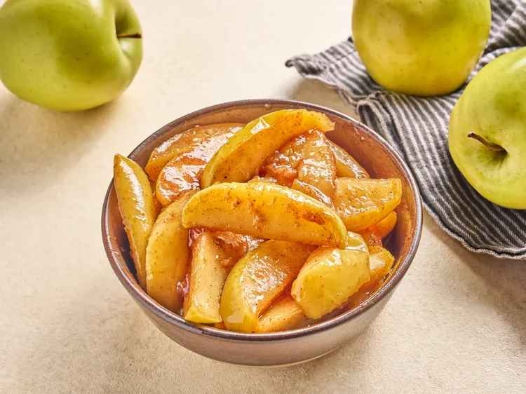

Home

What is Copycat Cracker Barrel Fried Apples
This copycat recipe recreates the famous Cracker Barrel side dish with Golden Delicious apples cooked in a sweet,
buttery sauce until tender, then thickened with cornstarch for the perfect consistency.
Ingredients:
- 6 tablespoons butter
- 4 Golden Delicious apples, sliced, or more as needed
- 2 teaspoons ground cinnamon
- ½ cup white sugar
- ½ cup cold water
- 1 ½ tablespoons cornstarch
Steps
- Melt Butter: Melt butter in a deep skillet over medium-high heat.
- Cook Apples: Add apples, cinnamon, and sugar. Stir until well coated. Bring to a simmer,
then reduce heat to medium-low. Cover and cook until apples are very tender, about 20 minutes.
- Thicken Sauce: Whisk together cold water and cornstarch until dissolved. Stir into apple
mixture and return to a simmer. Cook until thickened, about 2 minutes. Remove from heat.
- Serve: Serve warm and enjoy.
Return To top
Home